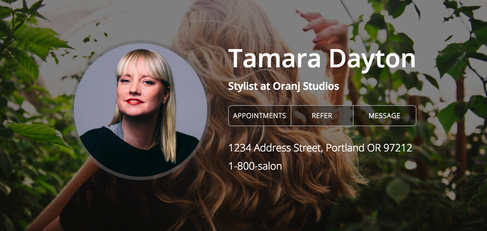
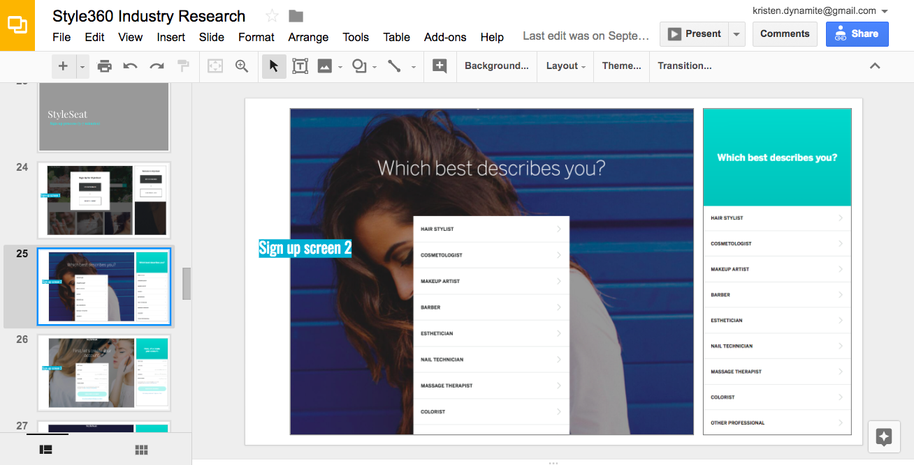
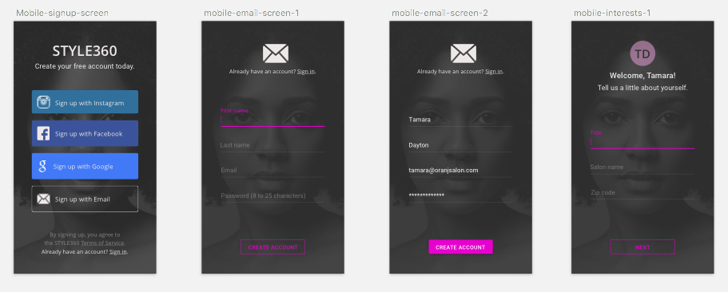
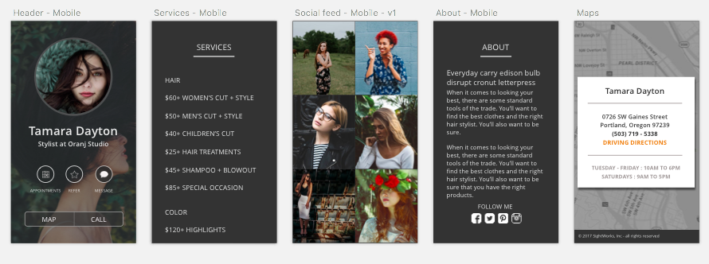
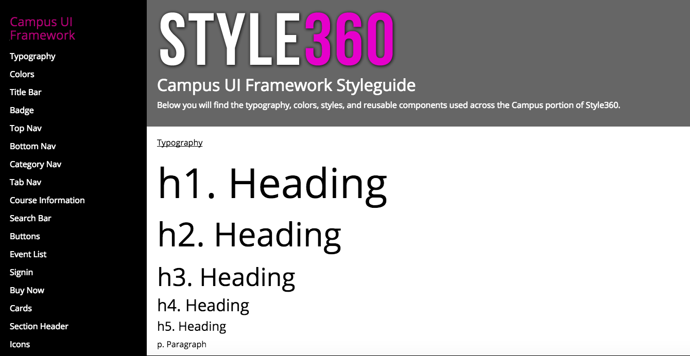
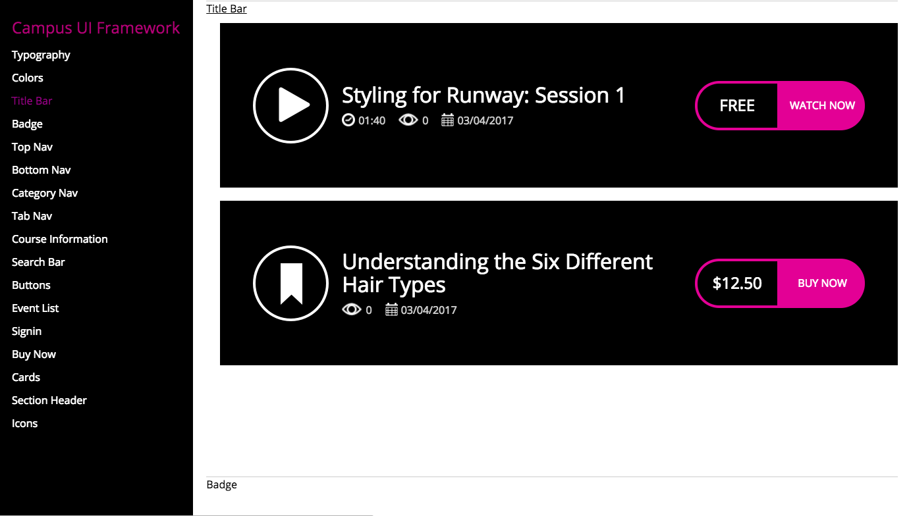
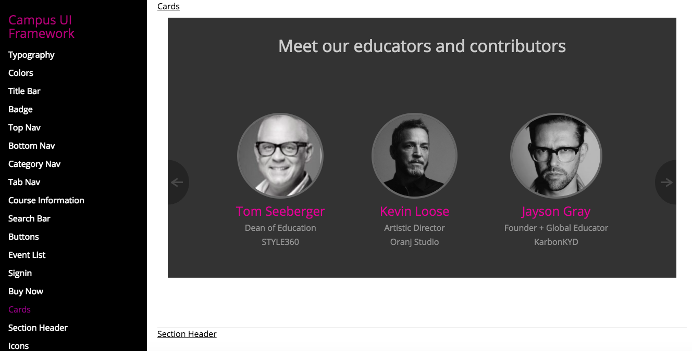

Style360
During my five-week internship at SightWorks, I worked with a small team of designers and engineers on a new digital product called 'Style360,' which addresses the market need for an industry-tailored website builder and educational resource for hair stylists. My roles included researching the onboarding process of related websites, sketching and wireframing the mobile and desktop versions of the product, and creating a framework UI for the reusable styles and components of the product.
Process
Research: I conducted industry research by walking through the sign-up and onboarding process on desktop and mobile for Behind The Chair, Styleseat, Sephora, and Boooker, comparing the time investment, number of screens, and barriers to entry encountered when creating a profile. The most successful user flows took less time and fewer screens to get a working profile set up, and followed up with thorough, clear next steps for profile customization via email.
Sketch Mock-ups: We wanted to create a sleek, simple sign-up process that quickly gets stylists in the system and gives them a business website that's ready to go as is, but is also highly customizable. With those details and the needs of Style360's users in mind, I mocked up a couple prototypes in Sketch that display the onboarding process. Stylists are able to sign up and have a working business page within a matter of minutes.
 Developing a framework and style guide: Beyond design, I also grew my front-end dev skills during this internship by building a library of reusable, responsive React components. Another SightWorks intern and I worked together on a typography and style guide, and from there I started creating a Style360 Framework UI to be used internally by developers. This internship was a unique opportunity, as I was able to design products across the entire product life cycle and work closely with a multidisciplinary team of senior designers, engineers, and the founders themselves.
  